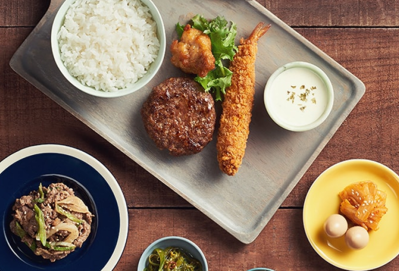
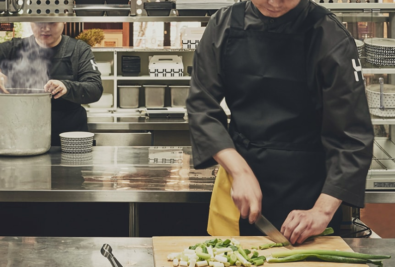
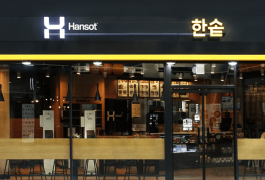

10년, 20년
대를 잇는 가족 사업
창업, 그것은 성공과 돈만을 좇다 보면
성공도 돈도 얻을 수 없습니다.
한솥이 성공한 이유는 본사만의 이익보다
모두의 이익을 언제나 우선시 했기 때문입니다.
따끈한 한 끼로 사회에 공헌하겠다는
철학을 지켜왔기 때문입니다.
한솥이어야 하는 세 가지 이유
- 
-
01
트렌드에
영향을 받지 않습니다유독 트렌드에 따라 성패를 달리하는 외식업! 한솥은 유행과 상관없이 꾸준히 성과를 내는 스테디셀러 프랜차이즈입니다.
- 
-
02
고객과 점주님의 이익을
먼저 생각합니다언제나 가맹점주의 이익을 우선으로 생각합니다. 안정적인 물류망과 높은 가성비의 식재료를 통해 모든 가맹점주가 만족할 수 있도록 노력합니다.
- 
-
03
투명하고
정직합니다한솥은 창업 이래 법적 문제가 1건도 없었습니다. 이익을 기준으로 바라보는 본사의 관점이 아닌 신뢰를 기준으로 미래를 함께 하기 때문입니다.